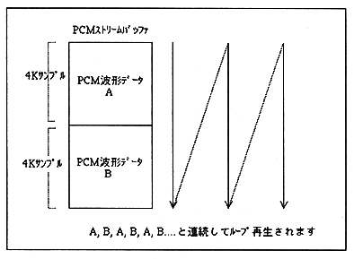

order | processing |
|---|---|
1 | The first waveform data is transferred to the area of waveform data A and waveform data B. |
2 | Sound control command “PCM start (85h)” is issued. |
3 | After playback of waveform data A, transfer the next waveform data to the area of waveform data A . |
4 | After playback of waveform data B is finished, transfer the next waveform data to the area of waveform data B . |
5 | Repeat steps 3 and 4 |
6 | To end, issue the sound control command “PCM stop (86h)”. |
Note: Buffer size, transfer method, transfer timing, etc. are free to the main system. Please select the most suitable method according to the situation without being bound by the procedure.